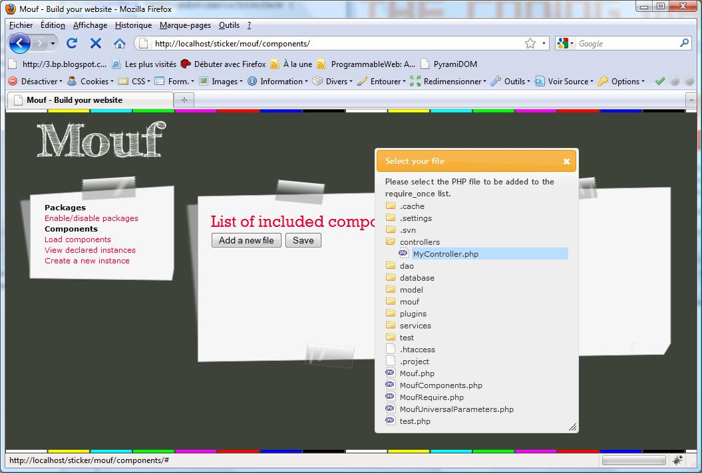
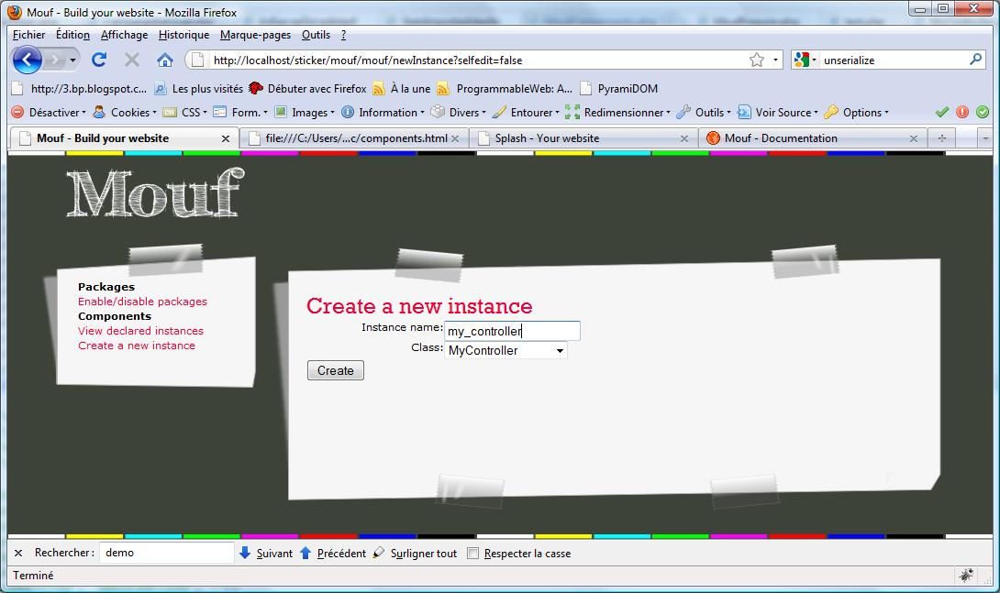

In Splash, a controller is a Mouf component, that contains a number of Actions.
Actions are methods that can be directly accessed from the browser.
The URLs to access an action are always:
http://[server-url]/[webapp-path]/[mouf-controller-instance-name]/[action-name]?[action-parameters]
Here is a sample:
<?php
/**
* This is my test controller.
*
* @Component
*/
class MyController extends Controller {
/**
* My first action.
*
* @Action
* @param string $var1
* @param string $var2
*/
public function my_action($var1, $var2) {
echo "<html><head></head>";
echo "<body>";
echo "var1 value is ".htmlentities($var1)." and var2 value is ".htmlentities($var2);
echo "</body>";
}
}
?>
First thing you can see: the MyController class extends the "Controller" class provided by Splash. Also, it is a Mouf component, since we can read the "@Component" annotation in the PHPDoc comment of the class.
The my_action method is a Splash action. You know this because there is a @Action annotation in the PHPDoc comment of the method.
The action takes 2 parameters: var1 and var2. This means that the page needs both parameters passed either in GET or POST.
In order to test this, we must first create an instance of the controller in Mouf.
We will do this using the Mouf User Interface.
We will start by including the MyController.php file, using the Mouf "Load components" menu.
Once this is registered, we can go in the "create a new instance" menu and create the "my_controller".
Now, we can access the example page using this URL:
http://[server-url]/[webapp-path]/my_controller/my_action?var1=42&var2=toto
Sometimes, we might want to have a URL that is a bit shorter than /my_webapp/my_controller/my_action.
Splash supports a special method called "defaultAction". If no action is provided in the URL, the defaultAction method will be called instead.
<?php
/**
* This is my test controller.
*
* @Component
*/
class MyController extends Controller {
/**
* The action called if no action is provided in the URL.
*
* @Action
*/
public function defaultAction() {
echo "This is the default action";
}
}
?>
The test page can be accessed using the URL: http://[server-url]/[webapp-path]/my_controller/.
Splash also supports the notion of "default controller". If the URL entered by the user is http://[server-url]/[webapp-path]/,
Splash will try to display the "defaultAction" of the controller whose instance name is "rootController" in Mouf.